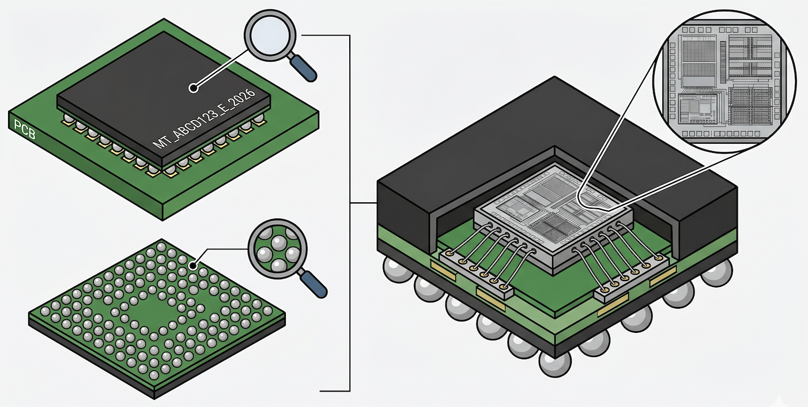

O que é um chip: visão aplicada à triagem

Figura 1: Anatomia de um BGA: Topo (Part Number) e Barriga (Matriz de contatos).
Um chip (circuito integrado ou CI) é o "cérebro" e a "memória" da sucata eletrônica que processamos. Tecnicamente, é um componente semicondutor que encapsula milhões (ou até bilhões) de transistores miniaturizados em um único package (encapsulamento).
No nosso contexto de operação, focamos no potencial de reacondicionamento. O profissional lida majoritariamente com duas famílias críticas para o nosso fluxo de triagem: armazenamento/memória (eMMC, uMCP, eMCP, NAND, RAM DDR/LPDDR) e processamento (CPUs, GPUs, SoCs).
Para dominar a triagem física, o operador deve focar em três pontos cruciais:
- O topo (encapsulamento): Onde o fabricante grava o Part Number (PN). Um único caractere lido incorretamente pode rebaixar um componente viável para o status de sucata básica.
- A "barriga" (substrato e esferas): Responsável pela conexão BGA (Ball Grid Array). O estado físico dessa malha de contatos (o "teste da barriga") define se o chip está apto para seguir na esteira.
- O miolo (die): A pastilha de silício protegida hermeticamente, onde reside a inteligência do componente.